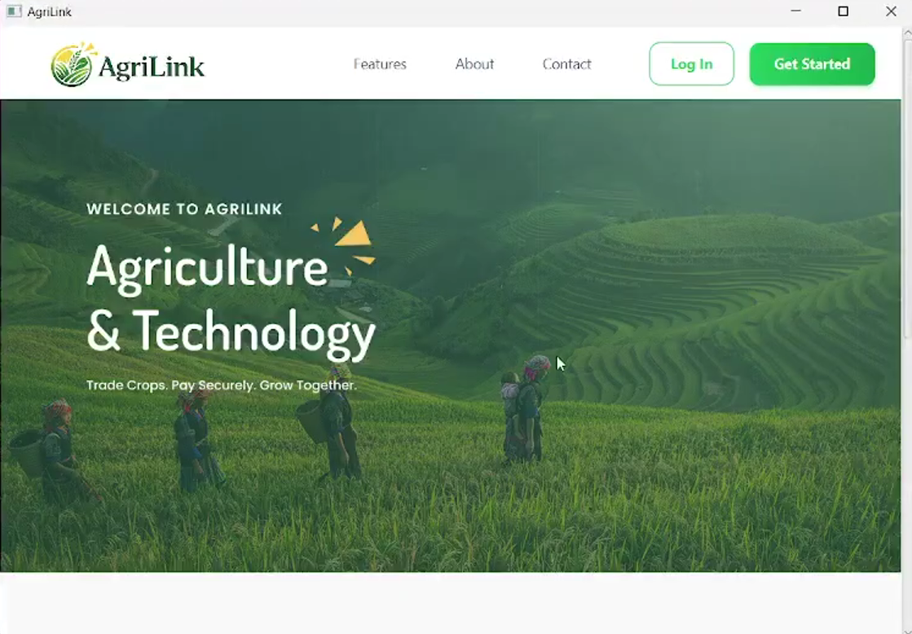
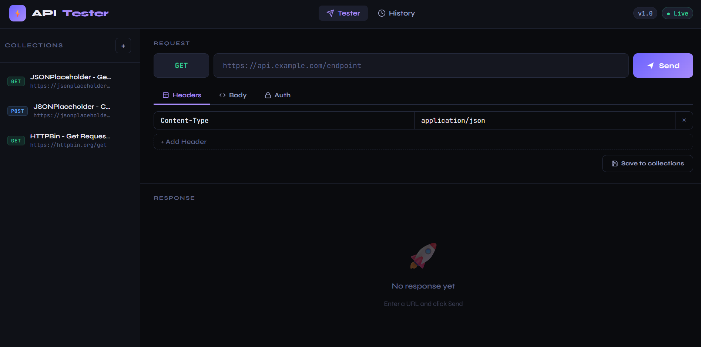
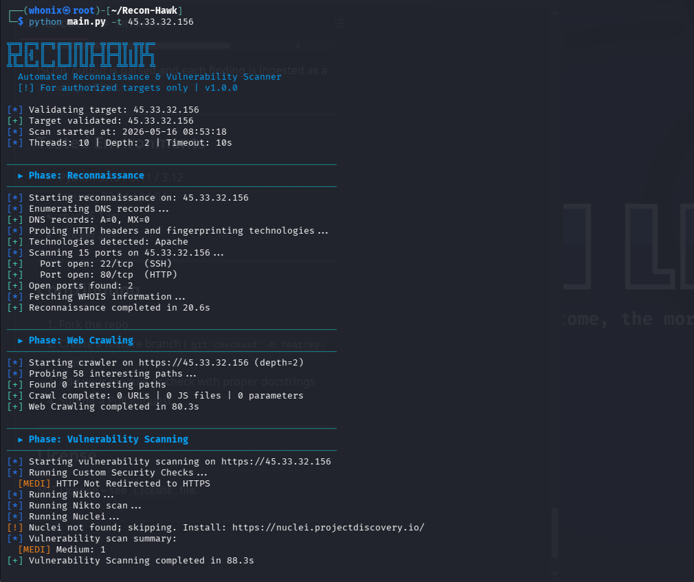

Explore my recent works

AgriLink is an online agricultural marketplace system designed to eliminate middlemen and empower farmers by giving them a direct channel to sell their produce. Buyers and businesses can browse, discover, and purchase agricultural products in a streamlined, user-friendly environment.
This project aims to modernize agricultural commerce by providing a digital platform that bridges the gap between farms and consumers — increasing farmer profits, reducing waste, and creating a more transparent supply chain.

A lightweight, Postman-inspired API testing tool built with PHP, MySQL, and Vanilla JS. Test any REST API endpoint, log every request, and save your favorites — all from your browser.

Automated Reconnaissance & Vulnerability Scanner:
A modular, CLI-based security assessment tool that automates the full recon → crawl → vuln-scan → report workflow against authorized web targets.